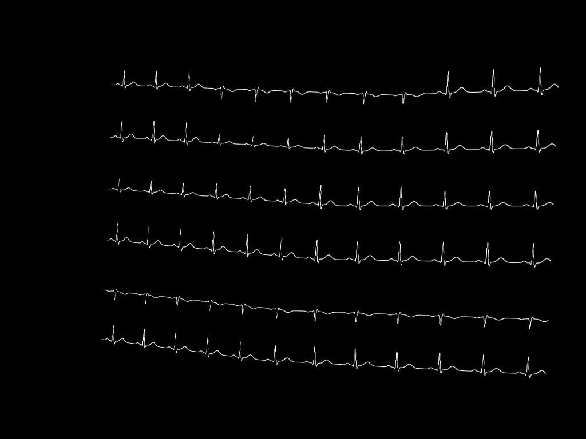
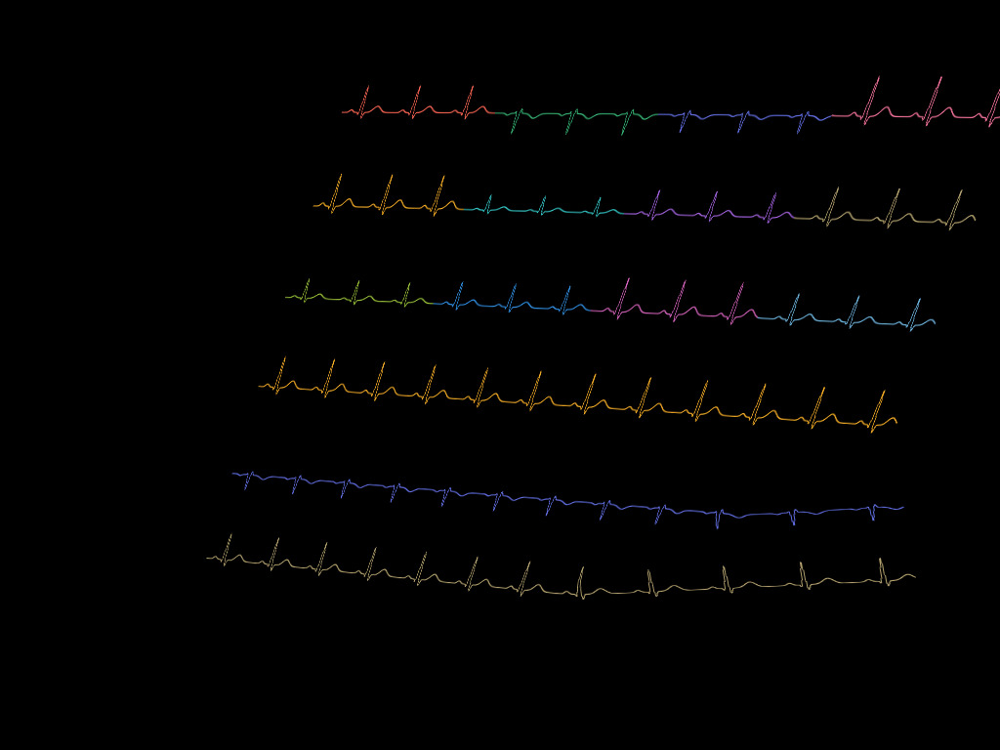
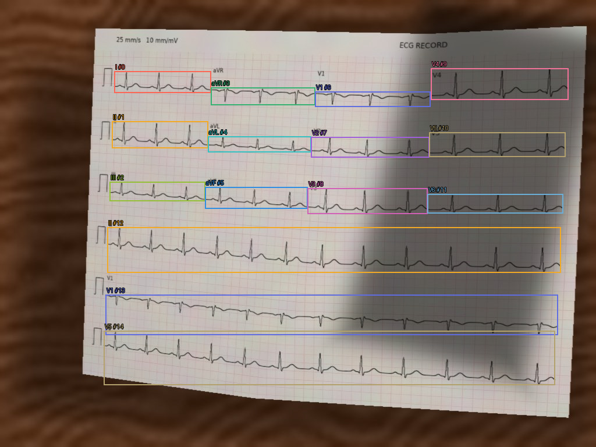

Advanced supervision
Use ECGSupervisionLayer when your network needs an input image and aligned segmentation or detection targets. All requested outputs come from one render and remain on the input device.
Request just what you need#
from ecg_gpu import ECGSupervisionLayer, SupervisionConfig, RenderConfig
synth = ECGSupervisionLayer(
fs=500,
config=RenderConfig(height=384, width=512),
supervision=SupervisionConfig(
outputs=("lead_masks", "bw", "wb", "lead_boxes", "instance_boxes"),
binary=False, threshold=.05, visible_only=True,
),
).to(device)
batch = synth(signals)
The default requests only lead_masks. RGB and the visibility mask are always returned. Baseline targets, scene maps and instance masks are not generated unless required by the selected interface.
| Output | Shape | Meaning |
|---|---|---|
image |
[B,3,H,W] |
Photographed RGB, float32 in [0,1] |
valid |
[B,1,H,W] |
Paper and explicit visibility support |
lead_masks |
[B,C,H,W] |
Independent lead trace coverage, default C=12 |
lead_ids |
[B,C] |
Canonical lead IDs in output channel order |
trace_mask |
[B,1,H,W] |
Maximum coverage across selected lead channels |
bw |
[B,1,H,W] |
1 - trace_mask, black traces on white |
wb |
[B,1,H,W] |
trace_mask, white traces on black |
lead_boxes |
[B,C,4] |
One envelope per selected lead, including repetitions |
lead_box_valid |
[B,C] |
Whether that lead box contains any target pixels |
instance_masks |
[B,15,H,W] |
Separate coverage for each printed occurrence |
instance_boxes |
[B,15,4] |
One box for each printed slot |
instance_box_valid |
[B,15] |
Whether that slot has visible target pixels |
instance_lead_ids |
[B,15] |
Canonical identity of each printed slot |
instance_active |
[B,15] |
Whether the layout/slot is enabled before capture |
instance_windows_s |
[B,15,2] |
Printed source window [start_s,end_s] |
instance_amplitude_sign |
[B,15] |
Printed polarity, including inverted aVR |
Instance metadata is returned when you request instance masks or boxes. Slots have fixed shapes for batching. Unused or invisible slots have false box-valid flags and boxes filled with -1.
Two grayscale polarities#


These views contain only the chosen leads. Grid, labels, pulses, table texture and capture shadows are excluded. Soft coverage gives anti-aliased edges. Set binary=True for masks containing exactly zero and one.
Independent channels#
supervision = SupervisionConfig(
outputs=("lead_masks", "wb"),
leads=("V6", "II", "V1"), # choose and reorder channels
binary=True,
threshold=.3,
)
The default order is I, II, III, aVR, aVL, aVF, V1, V2, V3, V4, V5, V6. leads can select a subset or reorder channels. It also selects which leads contribute to BW/WB and the union mask. Instance outputs still describe all printed slots.

Colors visualize the masks. The actual target is a tensor of separate channels. At crossings, more than one channel may be positive. Use sigmoid/BCE or another multilabel objective. A mutually exclusive softmax target loses this information.
Lead boxes and printed-instance boxes#

lead_boxes merge all visible occurrences of one canonical lead into one envelope. A long rhythm strip can make that envelope much larger than its short-row box. Use instance_boxes when training detection of individual printed traces.
Boxes use integer pixel-edge xyxy coordinates. The right and bottom edges are exclusive. For example, [3,2,7,5] covers columns 3–6 and rows 2–4. Box extraction uses pixels whose coverage is > threshold. The default threshold is .05 so thin anti-aliased edges can contribute. Increase it if your target definition requires stronger coverage.
Visibility and camera degradation#
visible_only=True excludes torn paper, out-of-frame content and explicit opaque occlusion. valid can contain soft visibility values. It does not measure OCR readability, contrast or recovery confidence.
visible_only=False retains projected traces behind explicit occluders where the projection exists. Out-of-frame pixels still do not exist in an image-space target. This option can support amodal objectives, but it does not make invisible signal segments observable.
Noise, blur and JPEG degradation affect RGB, while target masks remain geometric. They are a clean target under the same capture geometry, not a thresholded copy of the noisy RGB.
Reuse a richer render#
rendered = synth.render_batch(
signals, stage="all", return_scene=True, return_instances=True,
return_baselines=False, return_instance_boxes=False,
)
batch = synth.supervise(rendered) # no second render
This lets you retain scene maps or provenance while using the same advanced target format. Match the requested instance outputs by rendering with return_instances=True.
Export targets#
ecg-render --input signal.npz --output ecg.png \
--targets-dir targets \
--targets lead_masks,bw,wb,lead_boxes,instance_masks,instance_boxes \
--binary-targets --target-threshold 0.3
targets.npz preserves tensor arrays. boxes.json includes channel names and the coordinate convention. BW/WB PNGs are lossless grayscale exports. Add --target-leads II,V1,V5 to choose channel order, or --projected-targets for targets behind explicit occluders.
Inside training, use tensors directly. File export, NumPy conversion and JSON serialization belong outside the hot path.